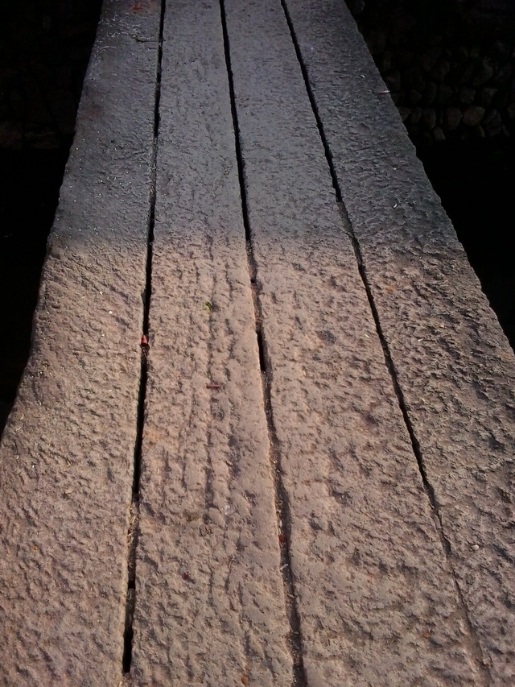

 古老的石桥
这是一座古老的石桥，是很久很久以前勤劳的打石人从山上搬下来的，他们把这块石头粗略地打磨了之后，架在了这条小河上，沟通了两岸。
我的外公是个勤劳的打石人，妈妈说他一生一世都在打石头。我曾问过外公，这座石桥是什么时候架在这里的，外公也不知道，可见这是一座多么古老的石桥。
这座古老的石桥是我儿时的娱乐天地之一，只要我一回外婆家就会来到这座石桥上玩耍。
石桥是从山上直接搬下来的，打石人就在中间刻上几横装饰一下。小时候的我总是会以中间这条缝隙为界，左脚踩在缝隙左边，右脚踩在缝隙右边，缓缓地走到对岸，生怕掉进小河里。等到了对岸时，我又会以同样的方式回来。
 有时候，顽皮的我和顽皮的表弟一起在这座古老的石桥上走路。
有时候，顽皮的我和顽皮的表弟一起在这座古老的石桥上走路。
有一次，我领头走在前面，表弟跟随在我身后。经常吵架的我们，今天有了难得的清静。我以为表弟长大了，变乖了，就在前面安心地走着。脚下的小河湍湍地流淌，水花与石头撞击演奏出美丽、清脆的音乐，却不知这音乐暗示着“杀机”。我踏上石桥，静静地走着，专心致志地盯着脚底，不敢有一丝其他的想法，致使我分心。我还把双手平举起来，保持平衡。就在这时，我感觉有一双手把我推向桥下。我猝不及防，只能任由这“引力”将我吸向水中。幸好这水不深，我也是懂得凫水的，所以并无大碍。当我从水里出来，看见的是在石桥上冲我做鬼脸的表弟。
这座古老的石桥见证了许多人的喜怒哀乐，也见证了我童年时的欢乐和悲伤。正是因为古老，所以它不仅是我童年的见证人，还是许多人一生的见证人。